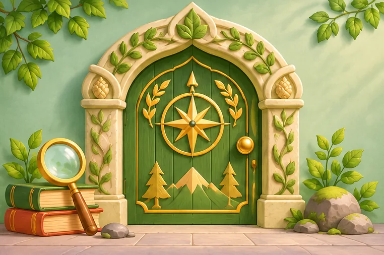

Выбери предмет
О программе
Это авторская образовательная программа Lumi для детей 4–5 лет. При её разработке учитывались ФГОС ДО и возрастное содержание ФОП ДО в разделах 19.5, 20.5, 21.5 и 22.5.

Это авторская образовательная программа Lumi для детей 4–5 лет. При её разработке учитывались ФГОС ДО и возрастное содержание ФОП ДО в разделах 19.5, 20.5, 21.5 и 22.5.